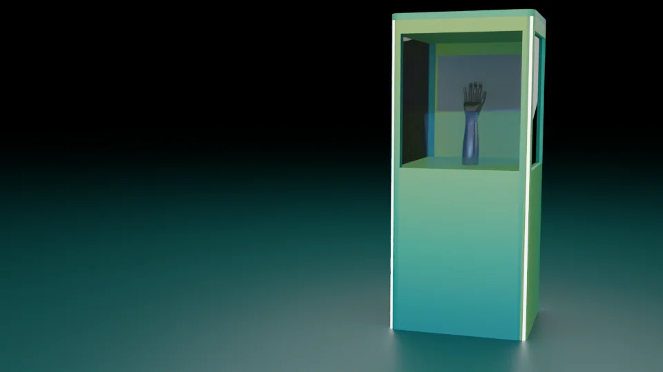

Glass-fronted hand display
The render shows a robotic hand in a tall open-front cabinet.
A challenge framed by light.
Explore the story
Give the hand display a strong focal position inside a compact enclosure.
A glass-fronted upper compartment places the robotic hand at viewing height. Green vertical light strips define the kiosk, with the technical view preserving its structure.
The render shows a robotic hand in a tall open-front cabinet.
The panel describes a rock-paper-scissors challenge.
A native booth scene, backup and several render views accompany the concept.
Explore the complete compositions and interface states. Select any image for a closer look.
A glass-fronted green display enclosure containing a robotic hand and forearm, framed by vertical light strips.
Structure, interaction and visual decisions that give the work its character.
RoleScene composition, visual treatment and rendering; confirm the specific personally created or adapted elements.
AssetsRobotic-hand geometry and the surrounding reference/game imagery are separate supplied components. This preview does not establish original hand modeling, working robotics, game software or delivered use. Personal contribution and public-use clearance remain pending.
StatusPrivate evidence-grounded study; final delivery and publication status remain unverified.